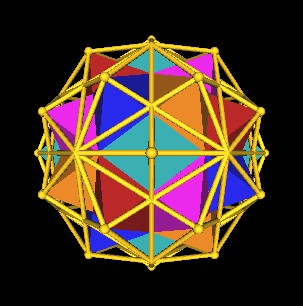
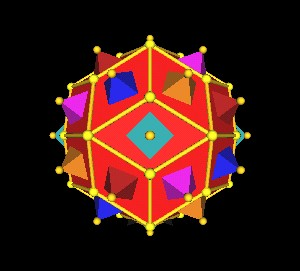
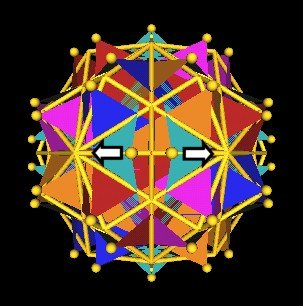
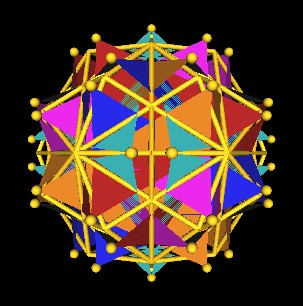
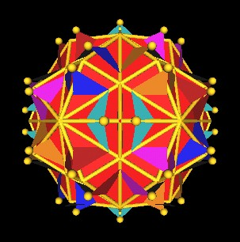
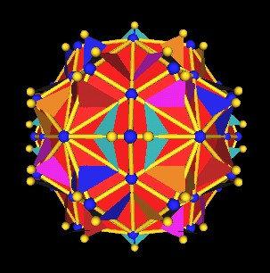
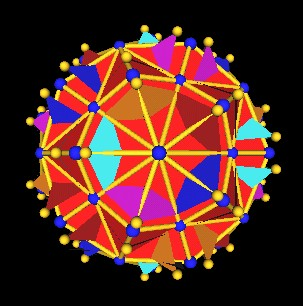
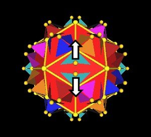

Here we have the 120 Polyhedron with the 5 Octahedra within. The 5 Octahedra define the "outer most" 30 vertices of the 120 Polyhedron.
|  | The 120 Polyhedron with 5 Octahedra. |
Part od the 120 Polyhedron's edges are the edges of the rhombic Triacontahedron. That is, remove these "outer most" vertices from the 120 Polyhedron and you are left with the rhombic Triacontahedron. The Octahedra's vertices stick out through the rhombic Triacontahedron's diamond faces.
|  | Rhombic Triacontahedron with 5 Octahedra. |
We now consider each of the 5 Octahedra to be a Jitterbug. (Here is a link to a movie showing the motion of a single Jitterbug.)
What happens is that each of the Octahedra/Jitterbug vertices split into 2 vertices.
|  | Octahedra vertices split into 2 from Jitterbug motion. |
Here are some other images showing the split of the vertices.
|  |  | Octahedra vertices split into 2 from Jitterbug motion. |
In this next image, the 120 Polyhedron vertices are colored blue.
|  | Octahedra vertices split into 2 from Jitterbug motion. |
|  | Octahedra vertices split into 2 from Jitterbug motion. |
Here is an animation showing the 5 Jitterbug motion in the 120 Polyhedron. You can clearly see the Octahedra vertices split into 2 vertices.
| Click for Animation. |
Note from the animation there are 2 different ways to split the Octahedra vertices.
|  | 2 ways to split the vetices results in 2 different 180 Polyhedra. |
The questions to be answered are:
Usage Note: My work is copyrighted. You may use my work but you may not include my work, or parts of it, in any for-profit project without my consent.